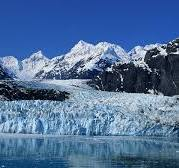
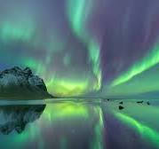

"The Amazon Rainforest: An Exploration of Earth's Lungs and
Biodiversity Hotspot"
posted by Arex on September 16
The Amazon Rainforest, often called the 'lungs of the Earth,' is a
critical ecosystem brimming with unparalleled biodiversity and vital
to the global climate...

"Glaciers in Peril: How Climate Change is Transforming the World's
Icy Giants"
posted by Arex on September 16
As global temperatures rise, glaciers around the world are
retreating at an alarming rate, revealing the stark consequences of
climate change on our planet’s icy landscapes...

"The Northern Lights: Understanding the Science and Magic Behind the
Aurora Borealis"
posted by Arex on September 16
The Northern Lights, or Aurora Borealis, enchant viewers with their
dazzling displays of color, caused by solar particles interacting
with Earth's magnetic field...
